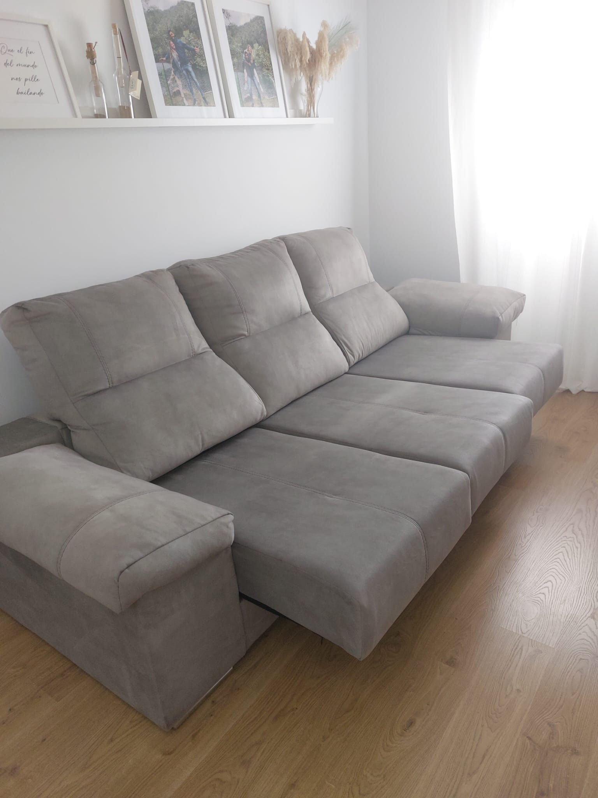

SEVILLA · FCT
Cuidado profesional de textiles y propiedades para hogares y espacios profesionales en Sevilla.Professional textile and property care for homes and professional spaces in Sevilla.

SEVILLA · FCT
Una propuesta clara para interiores y propiedades: cuidado profesional, valoración previa y atención según cada espacio.A clear approach for interiors and properties: professional care, prior assessment and attention shaped around each space.
LOCAL CARE · SEVILLA
Calor, polvo y uso diario influyen en cómo se cuidan sofás, colchones, alfombras y otros textiles. Valoramos cada pieza antes de recomendar el tratamiento.Heat, dust and everyday use affect how sofas, mattresses, rugs and other textiles need to be cared for. We assess each piece before recommending treatment.
DÓNDE TRABAJAMOSWHERE WE WORK
Atendemos Sevilla y zonas cercanas seleccionadas según el tipo de servicio y la agenda.We cover Sevilla and selected nearby areas depending on the service and availability.
SEVILLA · FCT
Cuéntanos qué necesitas y dónde estás. Envíanos fotos y te confirmamos la valoración y disponibilidad.Tell us what you need and where you are. Send us photos and we’ll confirm the assessment and availability.
CUÉNTANOS QUÉ NECESITAS ↗TELL US WHAT YOU NEED ↗